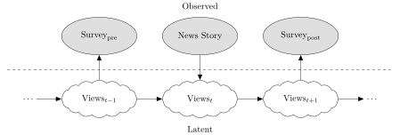
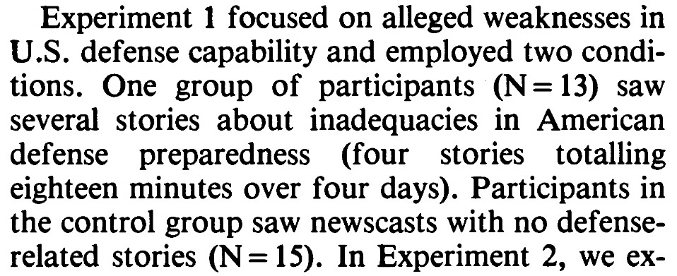

Code
cb_palette = [
"#E69F00", "#56B4E9", "#009E73",
"#F0E442", "#0072B2", "#D55E00",
"#CC79A7"
]DSAN 5650: Causal Inference for Computational Social Science
Summer 2025, Georgetown University
Today’s Planned Schedule:
| Start | End | Topic | |
|---|---|---|---|
| Lecture | 6:30pm | 6:45pm | HW1 Questions and Concerns → |
| 6:45pm | 7:15pm | Causality Recap → | |
| 7:00pm | 7:30pm | Motivating Examples: Causal Inference → | |
| 7:30pm | 7:45pm | Your First Probabilistic Graphical Model! → | |
| Break! | 7:45pm | 8:00pm | |
| 8:00pm | 9:00pm | PGM “Lab” → |
cb_palette = [
"#E69F00", "#56B4E9", "#009E73",
"#F0E442", "#0072B2", "#D55E00",
"#CC79A7"
]\[ \DeclareMathOperator*{\argmax}{argmax} \DeclareMathOperator*{\argmin}{argmin} \newcommand{\bigexp}[1]{\exp\mkern-4mu\left[ #1 \right]} \newcommand{\bigexpect}[1]{\mathbb{E}\mkern-4mu \left[ #1 \right]} \newcommand{\definedas}{\overset{\small\text{def}}{=}} \newcommand{\definedalign}{\overset{\phantom{\text{defn}}}{=}} \newcommand{\eqeventual}{\overset{\text{eventually}}{=}} \newcommand{\Err}{\text{Err}} \newcommand{\expect}[1]{\mathbb{E}[#1]} \newcommand{\expectsq}[1]{\mathbb{E}^2[#1]} \newcommand{\fw}[1]{\texttt{#1}} \newcommand{\given}{\mid} \newcommand{\green}[1]{\color{green}{#1}} \newcommand{\heads}{\outcome{heads}} \newcommand{\iid}{\overset{\text{\small{iid}}}{\sim}} \newcommand{\lik}{\mathcal{L}} \newcommand{\loglik}{\ell} \DeclareMathOperator*{\maximize}{maximize} \DeclareMathOperator*{\minimize}{minimize} \newcommand{\mle}{\textsf{ML}} \newcommand{\nimplies}{\;\not\!\!\!\!\implies} \newcommand{\orange}[1]{\color{orange}{#1}} \newcommand{\outcome}[1]{\textsf{#1}} \newcommand{\param}[1]{{\color{purple} #1}} \newcommand{\pgsamplespace}{\{\green{1},\green{2},\green{3},\purp{4},\purp{5},\purp{6}\}} \newcommand{\pedge}[2]{\require{enclose}\enclose{circle}{~{#1}~} \rightarrow \; \enclose{circle}{\kern.01em {#2}~\kern.01em}} \newcommand{\pnode}[1]{\require{enclose}\enclose{circle}{~{#1}~}} \newcommand{\purp}[1]{\color{purple}{#1}} \newcommand{\sign}{\text{Sign}} \newcommand{\spacecap}{\; \cap \;} \newcommand{\spacewedge}{\; \wedge \;} \newcommand{\tails}{\outcome{tails}} \newcommand{\Var}[1]{\text{Var}[#1]} \newcommand{\bigVar}[1]{\text{Var}\mkern-4mu \left[ #1 \right]} \]
The only workable definition of «\(X\) causes \(Y\)»:
| \(X = 5\) | \(\neq\) | \(\textsf{do}(X = 5)\) |
|---|---|---|
| Observing that \(X\) took on value 5 (for some possibly-unknown reason) | \(\neq\) | Intervening to force \(X \leftarrow 5\), all else in DGP remaining the same (intervention then “flows” through rest of DGP) |
Probably the most difficult thing in 5650 to wrap head around
“Special”: \(\Pr(\textsf{do}(X = 5))\) not well-defined, only \(\Pr(Y = 6 \mid \textsf{do}(X = 5))\)
To emphasize special-ness, we may use notation like:
\[ \Pr(Y = 6 \mid \textsf{do}(X = 5)) \equiv \textstyle \Pr_{\textsf{do}(X = 5)}(Y = 6) \]
to avoid confusion with “normal” events



Residents of the New Haven, Connecticut area participated in one of two experiments, each of which spanned six consecutive days […] took place in November 1980, shortly after the presidential election
We measured problem importance with four questions that appeared in both the pretreatment and posttreatment questionnaires:
- Please indicate how important you consider these problems to be.
- Should the federal government do more to develop solutions to these problems, even if it means raising taxes?
- How much do you yourself care about these problems?
- These days how much do you talk about these problems?


.csv!)

(Even in non-causal settings)
| \(O\) | \(C\) | \(A\) | \(B\) | \(D\) |
|---|---|---|---|---|
| 0 | 0 | 0 | 0 | 0 |
| 1 | 1 | 1 | 1 | 1 |
| 0 | 0 | 0 | 0 | 0 |
| 0 | 0 | 0 | 0 | 0 |
| 1 | 1 | 1 | 1 | 1 |
\[ \begin{align*} \Pr(D) &= 0.4 \\ \Pr(D \mid A) &= 1 \end{align*} \]